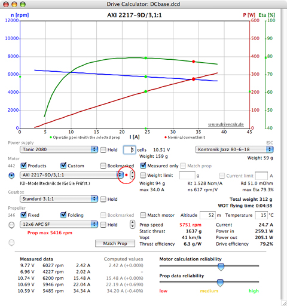

The main window
The main window displays the components that make up a complete drive, including the power supply, the ESC, the motor, possibly a gearbox, and the propeller. You may select any of the components from the respective popup menu list.
Generally, the ESC is considered to be a part of the motor unit and therefore should only be selected in the motor editing window, when entering the motor measurement data. While selecting a different ESC in the main window is allowed, I strongly advise against doing so, since Drive Calculator's prediction accuracy would be reduced. Other than the forward resistance no specific ESC properties can be regarded in the computation. For a number of devices even the forward resistance is estimated, because it is not available in the database.

Choosing a different component changes the drive configuration, which is stored in the database along with the motor. Once a component is changed, Drive Calculator computes the performance of the new configuration and displays the result in the diagram graph and in the results area to the right of the propeller popup menu.
Items like 'Vopt' and 'Thrust efficiency' in the results area are explained in a help tag that opens on mouse rollover. You may choose between having 'Vpitch' or 'Vopt' displayed by clicking on that label.
For special purposes you may choose a 'virtual load' instead of a real propeller from the propeller popup menu. To adjust the speed of the virtual prop click on the speed figure that is displayed in the results area. It will then become editable. You may as well alter the virtual prop speed by dragging the mouse cursor horizontally in the diagram area. Instead of 'Thrust efficiency' the theoretical 'n100W' value of the virtual load will be displayed in the results area.
To save a drive configuration, including its power supply, gearbox, ESC and propeller, press Ctrl-S (Command-S on the Mac). A red dot, to the right of the motor popup list menu, indicates that the current motor configuration has not yet been saved. Drive Calculator can also save the configuration automatically, if the user has activated that option in the Preferences dialog window.
The saved configuration will be restored any time you select the same motor again. To keep a battery, gearbox, or prop setting different from that in the saved configuration activate the respective 'Hold' check box before selecting the motor.
It is important to note the propeller rpm warning in the picture above. Drive Calculator may display similar warning messages, in red, if the current is too high for the battery or for the ESC.
The warning messages depend on the entries in the database. If there is no limit specified in the database, there will be no warning. Since many entries in the database are incomplete, you should never rely on Drive Calculator warnings; i.e. the calculated rpm may lead to the destruction of the prop and cause extreme danger, even if no warning message appears.
In all cases you should refer to the manufacturer's specifications.